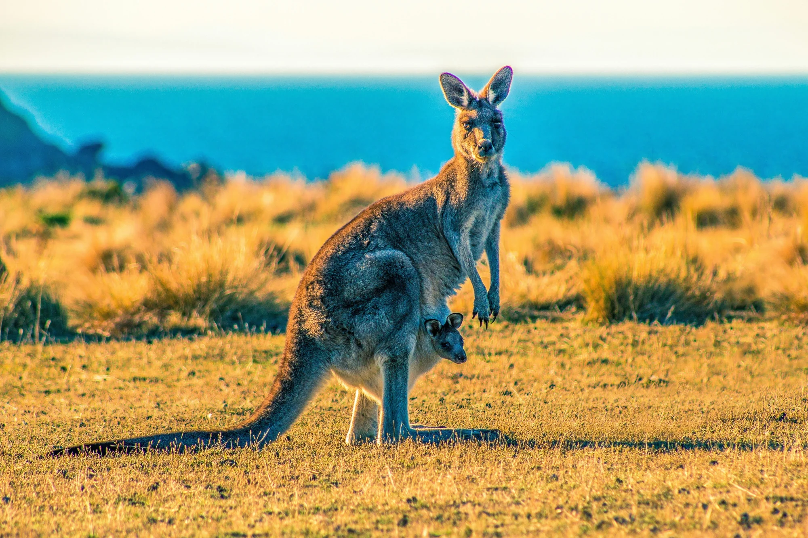

What Nature Photography Reveals About Australia

AUSTRALIA | 2023–2025
From birds and insects to plants and fungi, Australia's natural world is documented through photographic observations. These records help reveal where people direct their attention, when recording activity peaks, and which parts of nature appear most frequently.
The key distinction: More photographs do not necessarily mean more wildlife. These records reveal patterns in photographic activity, not a complete measure of Australia's biodiversity.
Using records from the Atlas of Living Australia between 2023 and 2025, this visual story explores four questions: What do we photograph? When do we photograph it? Where is activity concentrated? And how much can these records really tell us about Australia's natural landscapes?
Follow the four chapters below. Hover over charts for details and use the selectors to compare years and nature groups.
What does Australia's nature photography reveal about our attention?
Every photograph contributes to a growing record of Australia's natural environment. Between 2023 and 2025, the selected photographic observation counts increased substantially. But growth alone does not reveal which parts of nature receive the most attention.
This chapter follows that question in three stages: how much recording activity has grown, which nature groups contribute the most records, and whether their relative shares have changed over time.
Key finding: Summed photographic observation counts increased by approximately 51.3% between 2023 and 2025. This reflects an increase in recorded activity, not necessarily an increase in biodiversity.
Source: Atlas of Living Australia (ALA) , photographic observation records, 2023–2025. Counts are summed across selected taxonomic groups and may not represent unique observations.
More records, but of what? The upward trend shows increasing photographic recording activity across the selected groups. However, this growth does not necessarily mean that Australia's wildlife populations are increasing. It may also reflect changes in observer participation and recording behaviour. To understand what is driving these totals, we first need to look at the nature groups being photographed.
Key finding: Plants and insects consistently receive the highest numbers of photographic observation records, while amphibians, reptiles and mammals receive considerably fewer. This highlights an uneven distribution of photographic recording activity across nature groups, rather than differences in their actual abundance in Australia.
Source: Atlas of Living Australia (ALA) , photographic observation records, 2023–2025. Counts are summed across selected taxonomic groups and may not represent unique observations.
Does this imbalance change over time? Plants and insects dominate the total records, but rising observation counts can make it difficult to compare their relative importance across years. Looking at percentages instead reveals whether photographic attention is shifting.
Each waffle chart divides one year's records into 100 squares, with each square representing approximately 1%. Compare 2023, 2024 and 2025 to see how the seven nature groups share Australia's photographic attention.
Key finding: Despite a 51.3% increase in summed photographic records between 2023 and 2025, the overall distribution of nature groups remains broadly similar. Plants and insects consistently dominate, while amphibians account for approximately one square out of every hundred. This suggests that increased recording activity has not substantially changed which nature groups receive the most attention.
Source: Atlas of Living Australia (ALA) , photographic observation records, 2023–2025. Percentages are calculated from summed counts across selected taxonomic groups and may not represent unique observations.
Chapter 1 takeaway: Australia's selected photographic records have grown considerably, but attention remains uneven across nature groups. Plants and insects dominate the records, while less frequently recorded groups occupy only a small proportion. The next question is whether this photographic activity remains consistent throughout the year.
How does nature photography change with the seasons?
Australia's natural world changes throughout the year, and so does the way people photograph it. From warmer spring days to cooler winter months, photographic recording activity follows a seasonal rhythm.
But is there one peak season for all nature photography? This chapter first explores the busiest and quietest months nationally, before revealing how recording patterns differ between birds, insects, plants, fungi and other nature groups.
Each segment of the circular chart represents one month. Longer segments indicate more photographic records, while colours distinguish Australia's four seasons. Select a year to discover when recording activity reaches its highest and lowest levels.
Key finding: Loading seasonal observations...
Source: Atlas of Living Australia (ALA) , monthly photographic observation records, 2023–2025. Counts are summed across selected taxonomic groups and may not represent unique observations.
One calendar, seven different stories. The national pattern reveals when photographic recording is busiest overall, but it combines very different nature groups into one total. A peak in spring does not necessarily mean every group is photographed most often in spring. To uncover these differences, we need to look at each nature group's seasonal pattern separately.
The heatmap below separates the national recording pattern into seven nature groups. Each row represents a group, and each column represents a month. Darker green indicates a month with activity closer to that group's own annual peak, while lighter green indicates relatively lower activity.
Why compare relative activity? Some groups, such as plants, have far more records than others. Using each group's own peak as a reference makes it easier to see when different groups are most actively photographed, without the largest groups overwhelming the colour scale.
Key finding: Analysing seasonal patterns...
Source: Atlas of Living Australia (ALA) , monthly photographic observation records, 2023–2025. Counts are summed across selected taxonomic groups and may not represent unique observations.
Chapter 2 takeaway: Nature photography follows a seasonal rhythm, but the timing of recording activity differs between nature groups. Looking beyond national totals reveals patterns that would otherwise remain hidden. However, time is only one part of the story. Australia's states and territories also differ greatly in how much photographic activity they record and which nature groups receive attention. The next chapter explores these geographic differences.
Where is nature photography concentrated across Australia?
Australia's natural landscapes stretch from tropical northern regions to temperate southern forests, coastal environments and vast inland areas. Yet photographic recording activity is not distributed evenly across this geography.
This chapter explores three different perspectives. First, where is photographic activity most concentrated? Second, do different states and territories photograph the same kinds of nature? Finally, has the balance of photographic attention changed between 2023 and 2025?
Australia's states and territories differ enormously in land area. Comparing total photographic records alone can therefore be misleading. This map uses observation density, measured as records per 1,000 km², to compare photographic activity relative to the size of each state or territory. Darker regions represent higher recording density.
Why a symmetric logarithmic colour scale? Observation densities vary dramatically between states and territories. This scale makes both low- and high-density regions easier to distinguish without allowing the highest values to dominate the map.
Key finding: Analysing geographic observation patterns...
Source: Atlas of Living Australia (ALA) , photographic observation records, 2023–2025; land areas from Geoscience Australia . Density = records ÷ land area (km²) × 1,000. Counts are summed across selected groups and may not represent unique observations. Colour uses a symmetric logarithmic scale; the legend values remain in records per 1,000 km².
Where nature is photographed is only half the story. Observation density tells us how concentrated photographic activity is geographically, but it does not reveal which nature groups dominate those records. Two states can have very different recording densities while still photographing similar proportions of plants, birds and insects. To explore this distinction, we need to compare both the size and composition of each state's photographic records.
Which states contribute the most photographic records, and what kinds of nature make up those records? The Marimekko chart answers both questions at once. Each state's column width represents its share of Australia's selected photographic records, while the coloured segments show how those records are divided between nature groups.
How to read this chart: A wider column means a state contributes more records nationally. A taller coloured segment means that nature group accounts for a larger proportion of that state's records. Select a year to compare how these patterns differ between 2023 and 2025.
Key finding: Loading the selected year's observations...
Source: Atlas of Living Australia (ALA) , photographic observation records, 2023–2025. Column widths represent each state's share of the national total, while segment heights represent nature-group percentages within each state. Counts are summed across selected taxonomic groups and may not represent unique observations.
Different places, different photographic profiles. The Marimekko chart reveals that the contribution of each state and the composition of its records are two separate dimensions. But geography is not the only source of variation. The balance of nature groups can also shift over time. The next chart compares the beginning and end of our three-year period to reveal those changes.
Has Australia's photographic attention shifted towards different nature groups, and do these changes vary between states and territories?
This dumbbell chart compares the selected nature group's share of each state's photographic records in 2023 and 2025. The two endpoints represent the percentage share in each year, while the connecting line shows the size and direction of the change.
How to read this chart: Select a nature group to explore how its relative share has changed across Australia. Positive changes indicate that the group accounts for a larger proportion of a state's records in 2025, while negative changes indicate a smaller proportion. Differences are measured in percentage points, not percentage growth.
● 2023 ● 2025
Key finding (Plants, 2023–2025): Plant observations changed differently across states between 2023 and 2025. The ACT experienced a decline in plant records' share, while Queensland and Tasmania experienced increases. These changes reflect photographic recording activity rather than actual species abundance.
Source: Atlas of Living Australia (ALA) , photographic observation records, 2023 and 2025. Percentages are calculated within each state using summed counts across selected taxonomic groups. Changes are measured in percentage points, not percentage growth. Counts may not represent unique observations.
Chapter 3 takeaway: Australia's photographic activity is geographically uneven. Observation density, state contributions and nature-group composition each reveal different patterns, while changes between 2023 and 2025 show that photographic attention can shift differently across states and territories. These geographic differences raise another question: how does photographic activity relate to Australia's protected natural landscapes? The final chapter explores this relationship.
What can photographic records reveal about Australia's protected landscapes?
Australia's protected landscapes play an important role in conserving natural environments. But does having more protected areas correspond with greater nature photography activity?
This final chapter examines the relationship between protected-area features and photographic observation density, before comparing two alternative ways of mapping the geographic distribution of photographic records.
Each point represents an Australian state or territory. The horizontal axis shows the number of protected-area features recorded in CAPAD 2024, while the vertical axis shows photographic observations per 1,000 km². Select a year to explore how the relationship changes.
How to interpret this chart: The vertical axis uses a symmetric logarithmic scale to accommodate large differences in observation density. Protected-area feature counts describe the number of mapped features, not the proportion of land protected. Any correlation represents an association, not causation.
Key finding: Loading the selected year's observations...
Sources: Atlas of Living Australia (ALA) , photographic observation records, 2023–2025; CAPAD 2024 , terrestrial protected-area feature counts; and Geoscience Australia, state and territory land areas. Observation density is measured per 1,000 km². The vertical axis uses a symmetric logarithmic scale. Protected-area feature counts are not equivalent to protected-land coverage. This comparison is exploratory and does not establish causation.
A relationship worth questioning. The scatterplot explores whether protected-area feature counts and photographic observation density move together, but it cannot explain why particular states record more photographs. To understand the geographic distribution itself, we can examine the same observations using two different mapping techniques.
Where are Australia's photographic records concentrated in absolute numbers?
This proportional symbol map places circles over Australian states and territories, with larger circles representing more photographic observations. Unlike the earlier choropleth map, which adjusted records for land area, this map shows total recorded activity.
Why use proportional symbols? Circle sizes make differences in recording volume visible without colouring entire states according to their geographic area.
Key finding (2025): Nature photography records are unevenly distributed across Australian states and territories. Queensland, New South Wales and Victoria show substantial recording activity, while the ACT and Northern Territory have comparatively fewer records. Unlike the choropleth in Chapter 3, this map shows total records rather than observation density.
Source: Atlas of Living Australia (ALA) , photographic observation records, 2023–2025. Circle areas represent photographic record counts. Symbols are placed at approximate state and territory reference locations rather than the exact locations of individual observations. The ACT symbol is displaced from Canberra for readability, with a dashed connector indicating its approximate geographic location.
What if the map itself reflected photographic activity? The proportional symbol map preserves Australia's familiar geography while using circles to represent record counts. The final visualisation takes a more dramatic approach: changing the apparent size of states and territories according to their photographic contribution.
What would Australia look like if its geography reflected photographic activity rather than land area?
This non-contiguous cartogram resizes state and territory shapes to represent their photographic observation counts. Larger shapes indicate greater recording activity, while smaller shapes indicate fewer records.
How to read this chart: Compare the relative prominence of each state rather than its real-world land area. The shapes are approximately scaled and should not be interpreted as precise area-proportional representations. Select a year to explore changes from 2023 to 2025.
How to read this map: The light grey outlines represent Australia's actual geography. The green shapes represent states resized according to photographic records. Larger green regions indicate more observations, while smaller regions indicate fewer observations. Darker green also indicates higher observation totals.
Key finding: Loading the selected year's observations...
Source: Atlas of Living Australia (ALA) , photographic observations, 2023–2025. State boundaries from the project's Australian states GeoJSON. Resized shapes are approximate, with each year's largest recording total used as the scaling reference.
Chapter 4 takeaway: The relationship between protected-area feature counts and photographic observation density is not straightforward. Protected-area counts alone cannot establish why some states record more nature photographs than others. Comparing observation density, total records and differently scaled maps reveals contrasting perspectives on Australia's photographic activity. Ultimately, how we measure and visualise nature influences the patterns we notice.
Millions of photographic observations reveal more than just Australia's natural beauty. They show where people record nature, when they are most active, and which parts of the natural world receive the most attention. Across eleven visualisations, four key insights emerge.
1. Nature photography is growing. Selected photographic observation counts increased by 51.3% between 2023 and 2025. However, more observations do not necessarily mean more wildlife. They reflect increased recording activity, not a direct increase in biodiversity.
2. Not all nature receives equal attention. Plants and insects dominate photographic records, while groups such as amphibians account for a much smaller share. Despite the growth in observations, the overall balance between nature groups remained relatively stable.
3. Time and geography shape the story. Photography follows seasonal patterns, but different nature groups experience different peaks. Recording activity also varies considerably between states and territories, both in density and in the types of nature photographed.
4. How we measure nature changes what we see. Observation density, total record counts and protected-area comparisons reveal different aspects of Australia's photographic activity. The maps demonstrate how different visual representations can change which geographic patterns stand out.
These findings reveal patterns in photographic recording activity, not a complete picture of Australia's biodiversity. Where and when observations are recorded can be influenced by accessibility, participation, seasonal conditions and human interest. The dataset therefore reflects both nature and the people documenting it.